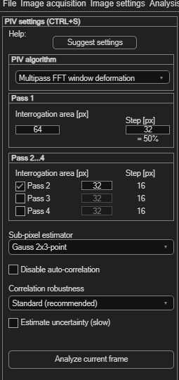
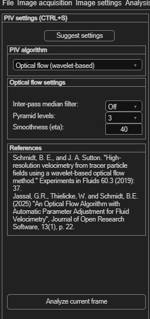

PIV settings
This is where you choose the cross-correlation algorithm and its parameters — the heart of a PIV analysis. Settings here don't compute anything by themselves; they define what happens when you click Analyze current frame or run the full analysis.
Opening the panel
Choose Analysis → PIV settings (Ctrl+S). The panel reflows depending on which algorithm you pick — the screenshot shows the default, Multipass FFT window deformation.

Not sure where to start? Suggest settings
Click Suggest settings, then drag a rectangle around a representative area of your image — one with typical particle density and a typical displacement between frames. PIVlab proposes an interrogation area size from that selection, giving you a reasonable starting point instead of guessing.
Choosing an algorithm
The PIV algorithm dropdown offers four options — this is PIVlab's own guidance, shown in the dropdown's tool tip:
| Algorithm | When to use it |
|---|---|
| Multipass FFT window deformation | The standard algorithm, suitable for most cases — start here unless you have a specific reason not to. |
| Ensemble multipass FFT window deformation | For sparsely seeded flows (e.g. micro-PIV), where a single image pair doesn't have enough particles for a reliable correlation on its own. |
| Single pass direct cross-correlation (DCC) | The first algorithm PIVlab ever implemented — simpler, single-pass, generally superseded by multipass FFT for everyday use. |
| Optical flow (wavelet-based, wOFV) | Can reach higher spatial resolution with suitable image data, at the cost of speed. Implemented by Schmidt et al. |
Picking an algorithm changes which controls are shown below it — described per algorithm next.
Multipass FFT window deformation & Ensemble
Both use the same pass-based structure. Analysis proceeds through up to four passes, each with a smaller Interrogation area than the last, refining the displacement estimate every time:
| Field | Meaning |
|---|---|
| Pass 1 → Interrogation area [px] | Edge length of the first pass's window. Should be smaller than about a quarter of your expected maximum displacement. |
| Pass 1 → Step [px] | Spacing between windows — usually 50% of the interrogation area (the panel shows this overlap percentage automatically). |
| Pass 2 / 3 / 4 (checkboxes + sizes) | Each enabled pass must use an interrogation area no larger than the pass before it. More passes generally improve accuracy and resolution, at the cost of computation time. |
For guidance on how large to make each pass and how many passes to use, see Tips & tricks: choosing a suitable interrogation area below.
Single pass direct cross-correlation (DCC)
Only the Pass 1 panel is shown — DCC is single-pass by definition, so there's no Pass 2–4 refinement and no correlation-robustness or auto-correlation option (see the table below).
Optical flow (wOFV)
Selecting this algorithm replaces the pass panels with an Optical flow settings panel:

| Field | Meaning |
|---|---|
| Parallel process patches | Splits the image into patches processed in parallel (Off, a fixed size, or Default). |
| Inter-pass median filter | Optional median filtering between the coarse-to-fine pyramid levels. |
| Pyramid levels | Number of coarse-to-fine steps; larger displacements need more levels. |
| Smoothness (eta) | Regularization parameter controlling how smooth the resulting flow field is. |
The References panel credits the method's sources: Schmidt, B. E., and J. A. Sutton, "High-resolution velocimetry from tracer particle fields using a wavelet-based optical flow method," Experiments in Fluids 60.3 (2019): 37; and Jassal, G. R., Thielicke, W. and Schmidt, B. E., "An Optical Flow Algorithm with Automatic Parameter Adjustment for Fluid Velocimetry," Journal of Open Research Software, 13(1) (2025), p. 22.
Sub-pixel estimation, robustness and uncertainty
These extra controls sit below the algorithm-specific panels — which ones are shown depends on the algorithm you picked:
| Control | Shown for | What it does |
|---|---|---|
| Sub-pixel estimator (Gauss 2×3-point / 2D Gauss) | FFT, Ensemble, DCC | How the peak position is refined below one pixel of precision. 2D Gauss is thought to help slightly with motion-blurred images, but the difference is usually small. |
| Disable auto-correlation | FFT, Ensemble | Rejects displacements very close to zero — useful when a strong background signal would otherwise bias results toward "no motion". |
| Correlation robustness (Standard / High / Extreme) | FFT, Ensemble | Trade speed for robustness against difficult image data. Higher settings are slower. |
| Estimate uncertainty (slow) | FFT only | Computes a velocity-measurement uncertainty estimate (Sciacchitano 2013). Roughly doubles analysis time. |
Tips & tricks: choosing a suitable interrogation area
This applies mainly to Multipass FFT window deformation and Ensemble, where you choose a size for each of several passes. DCC has only one pass by definition, and wOFV doesn't use interrogation areas at all.
Balancing particle count and displacement
Two numbers matter most for your final pass: how many particles fall inside each interrogation area, and how far particles travel between frames.
| Quantity | Target |
|---|---|
| Particles per interrogation area (final pass) | Roughly 5–15. Too few gives a weak, noisy correlation peak; too many is fine — it just costs resolution. |
| Particle displacement between frames | Roughly 2–8 px. Large interrogation areas are fine and will only limit your resolution, not your accuracy. |
It's tempting to shrink the final interrogation area further just to get a denser-looking vector field. Resist it — a smaller window with too few particles produces noisier, less accurate vectors even though the plot looks higher-resolution. Make the final interrogation area as large as your target particle count and displacement allow, not as small as possible.
How multi-pass deformation changes the rules
The classical "¼ rule" — keep the interrogation window at least four times the maximum expected displacement — is a reasonable starting point, but it was designed for single-pass correlation. It doesn't strictly apply once you're running multiple passes with window deformation, and later passes can safely use much smaller windows than the rule would suggest. There's no universally valid formula here; some tuning by eye is unavoidable.
That's because each pass solves a different problem. Pass 1 only needs a rough displacement estimate, so a large window helps — it improves signal-to-noise, converges more reliably, and produces fewer failed correlations. Every later pass deforms and repositions its windows using the previous pass's estimate, which lets it safely use a smaller window than a single-pass algorithm ever could. A typical three-pass progression is 128 → 64 → 32 px. More passes generally reduce noise and bias further, at the cost of computation time — three is a reasonable default.
A practical starting workflow
Put together, this is a reasonable order to work through when setting up a new analysis:
| Step | Recommendation |
|---|---|
| Estimate displacement | Aim for roughly 2–8 px between frames. |
| Choose Pass 1 | Use a large interrogation area — often 128 px, sometimes larger. |
| Subsequent passes | Reduce gradually, e.g. 128 → 64 → 32 px. |
| Check particle count | Aim for 5–15 particles in the final interrogation area. |
| Inspect results | Look for noisy vectors or failed correlations. |
| If noisy | Increase the final interrogation area. |
| If resolution is insufficient | Decrease the final interrogation area — only if correlation quality stays acceptable. |
None of this is exact — treat it as a starting point, then adjust based on what Analyze current frame shows you (see Testing your settings below).
When not to fix it with interrogation area size
The Suggest settings button gives you a first estimate from your image's particle density and typical displacement — a good starting point, not a substitute for checking the result against the workflow above.
Choosing Δt together with the interrogation area
The time step between your two images (the same value you'll later enter as time step in ms in spatial calibration) and your interrogation area choice are not independent — pick them together. Aim for the same 2–8 px displacement discussed above: too small a Δt increases uncertainty, too large a Δt causes the correlation to fail outright.
Rather than calculating the ideal Δt in advance, it's often quicker to just enter a rough guess, run a quick test analysis, then click a vector in the region that matters to you — the Tools panel (bottom left, "Current point") reports the displacement directly in pixels, so you can see immediately whether it's in the 2–8 px range and adjust the pulse separation or frame spacing accordingly.
Testing your settings
Click Analyze current frame to run the analysis on just the frame you're viewing — a quick way to check your settings before committing to a full, multi-frame run. Running the analysis on the whole session is covered on its own page.